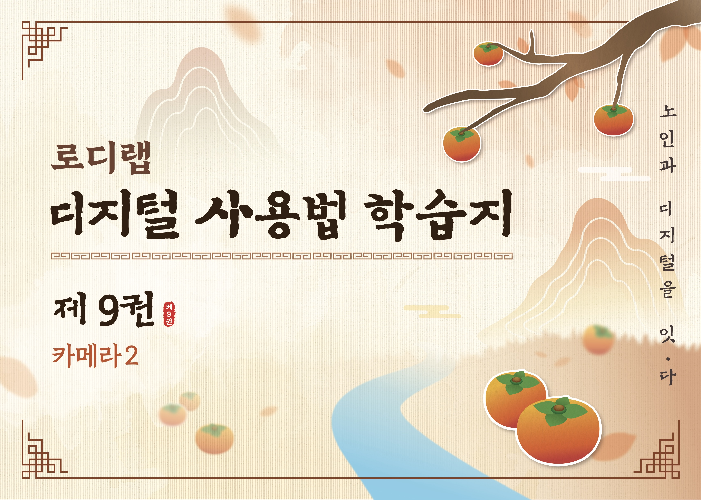

김순남
여성 • 72세 • 성남시 중원구
가입일
2026-01-29
현재 수강 패키지
1:1 8회차 패키지
전화번호
010-1234-5678
기본 설정
밝기
음량
핵심 니즈
학습 현황
진도율
다음 강의

디지털 역량
지난 수업 내용 요약
지난 수업에서는 스마트폰의 기본 제스처 및 터치 방식에 대해 학습했습니다. 화면을 누르기, 길게 누르기, 슬라이드 등의 기본 동작을 반복 연습했으며, 실제 카메라 앱을 열어 사진 촬영 기능까지 응용하여 시연했습니다.
오답 데이터
강점과 약점
강점
약점
커리 추천
기존 커리 기반 추천
키오스크
우선 추천현재 수강 중인 카메라 활용을 보완하고, 고령층 필수 생활 기술 학습
난이도: 초중급
새로운 커리 제작 추천
AI 활용 일상
신규 개발스마트폰 기본기를 바탕으로 일상에서 AI 기술을 활용하는 방법 학습
난이도: 초중급
시니어에게 부합한 교수법
지켜야 할 교수법
이 학습자는 높은 집중력과 복습률을 보이므로, 반복 학습을 통한 장기 기억 강화에 효과적입니다. 복습 스케줄을 체계적으로 제공하고, 질문 유도 기법을 통해 학습자의 적극성을 촉진해야 합니다. 또한 학습 내용을 실생활의 예시와 연결하여 실제 활용 능력을 높이는 것이 중요합니다.
피해야 할 교수법
빠른 진도로 인한 혼란을 야기하면 안 되며, 복잡한 설명 없이 단순 지시만 제공하는 것도 피해야 합니다. 일방적인 강의식 수업은 학습자의 응용 능력 부족을 심화시킬 수 있으므로, 상호작용적인 수업 방식이 필요합니다. 특히 자신감 저하를 야기하는 질책은 절대 금물입니다.